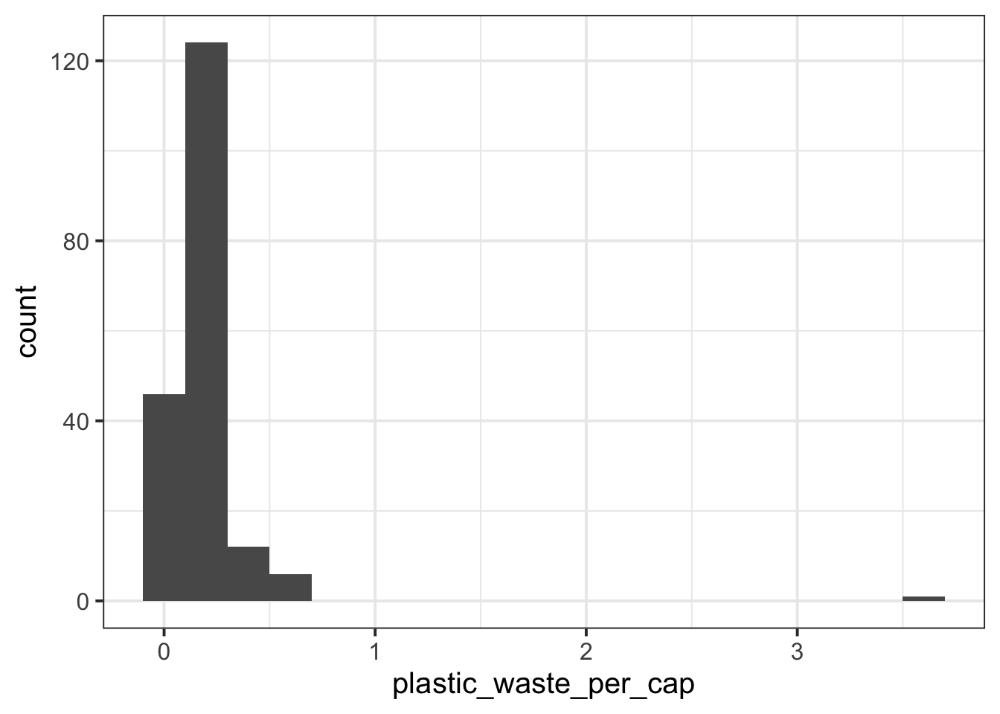
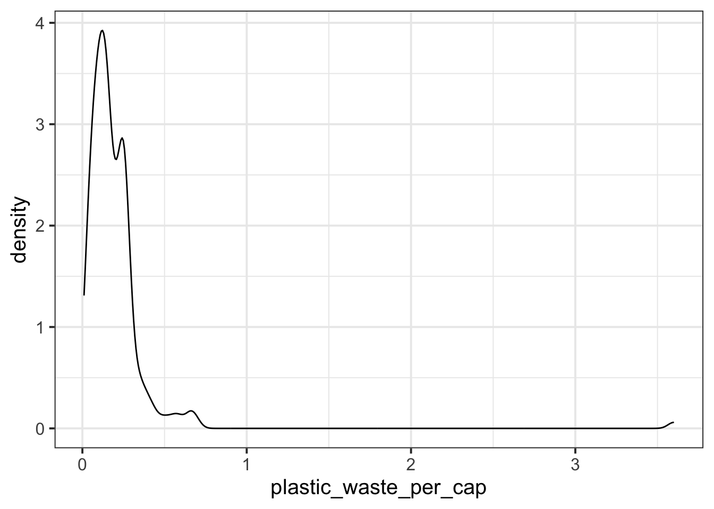
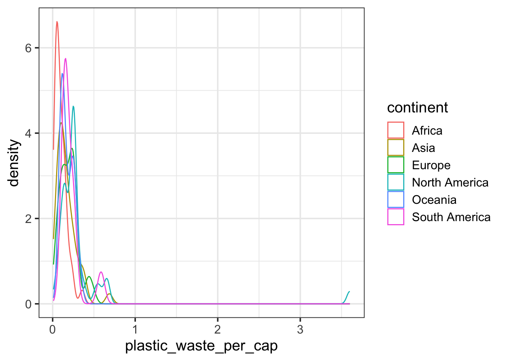
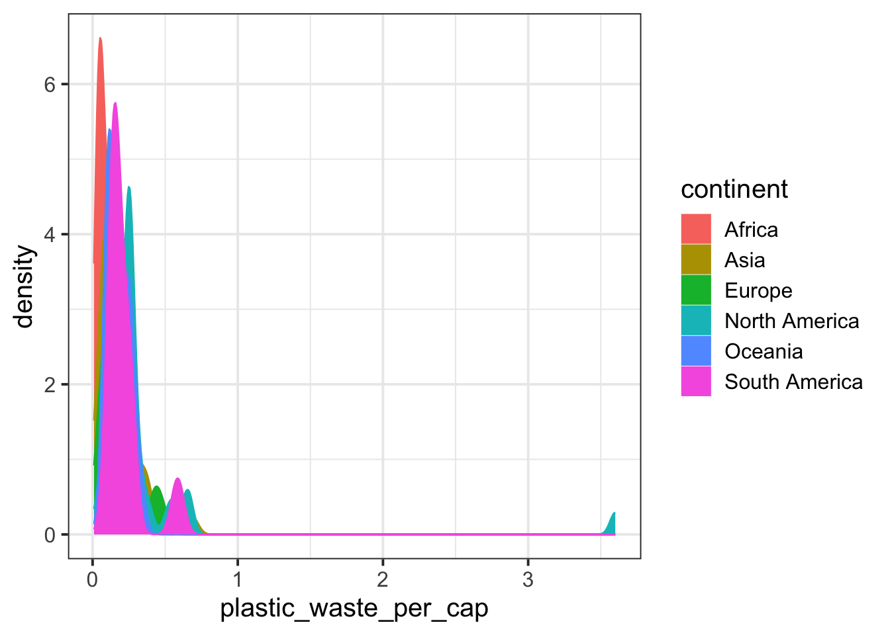
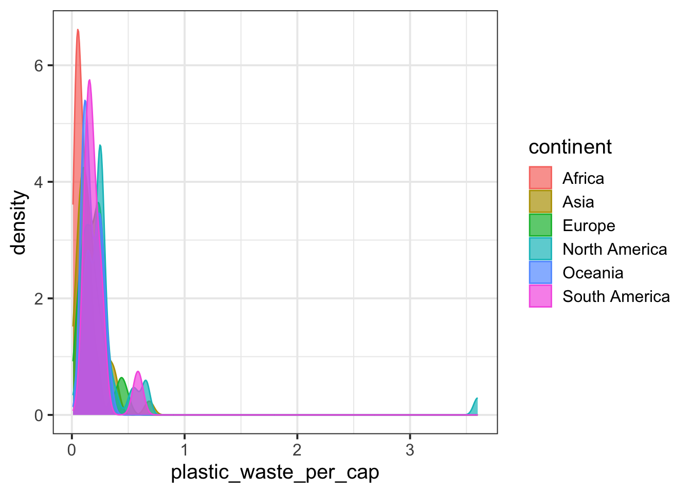
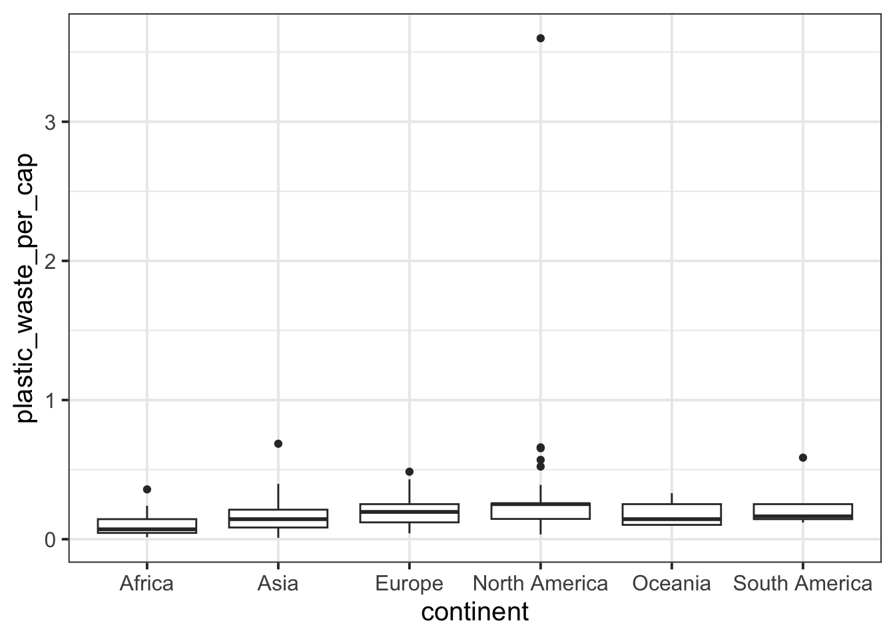

Main exercises
Let’s start by taking a look at the distribution of plastic waste per capita in 2010.

One country stands out as an unusual observation at the top of the distribution. One way of identifying this country is to filter the data for countries where plastic waste per capita is greater than 3.5 kg/person.
## # A tibble: 1 × 10
## code entity continent year gdp_per_cap plastic_waste_per_cap
## <chr> <chr> <chr> <dbl> <dbl> <dbl>
## 1 TTO Trinidad and Tobago North Ameri… 2010 31261. 3.6
## # ℹ 4 more variables: mismanaged_plastic_waste_per_cap <dbl>,
## # mismanaged_plastic_waste <dbl>, coastal_pop <dbl>, total_pop <dbl>Did you expect this result?
You might consider doing some research on Trinidad and Tobago to see why plastic waste per capita is so high there, or whether this is a data error.
- Plot, using histograms, the distribution of plastic waste per capita faceted by continent. What can you say about how the continents compare to each other in terms of their plastic waste per capita?
- NOTE: From this point onwards the plots and the output of the code are not displayed in the lab instructions, but you can and should code and view the results yourself.
Another way of visualizing numerical data is using density plots.

And compare distributions across continents by coloring density curves by continent.
ggplot(data = plastic_waste,
mapping = aes(x = plastic_waste_per_cap,
color = continent)) +
geom_density()
The resulting plot may be a little difficult to read, so let’s also fill the curves in with colors as well.
ggplot(data = plastic_waste,
mapping = aes(x = plastic_waste_per_cap,
color = continent,
fill = continent)) +
geom_density()
The overlapping colors make it difficult to tell what’s happening with the distributions in continents plotted first, and hence covered by continents plotted over them.
We can change the transparency level of the fill color to help with this.
The alpha argument takes values between 0 and 1: 0 is completely transparent and 1 is completely opaque.
There is no way to tell what value will work best, so you just need to try a few.
ggplot(data = plastic_waste,
mapping = aes(x = plastic_waste_per_cap,
color = continent,
fill = continent)) +
geom_density(alpha = 0.7)
This still doesn’t look great…
- Recreate the density plots above using a different (lower) alpha level that works better for displaying the density curves for all continents.
- Describe why we defined the
colorandfillof the curves by mapping aesthetics of the plot but we defined thealphalevel as a characteristic of the plotting geom.
🧶 ✅ Now is a good time to save and knit your document and confirm the outputs look as you expect them to.
And yet another way to visualize this relationship is using side-by-side box plots.
ggplot(data = plastic_waste,
mapping = aes(x = continent,
y = plastic_waste_per_cap)) +
geom_boxplot()
- Convert your side-by-side box plots from the previous task to violin plots. What do the violin plots reveal that box plots do not? What features are apparent in the box plots but not in the violin plots?
- Visualize the relationship between plastic waste per capita and mismanaged plastic waste per capita using a scatterplot. Describe the relationship.
Remember: We use geom_point() to make scatterplots.
- Color the points in the scatterplot by continent. Does there seem to be any clear distinctions between continents with respect to how plastic waste per capita and mismanaged plastic waste per capita are associated?
- Visualize the relationship between plastic waste per capita and total population as well as plastic waste per capita and coastal population. You will need to make two separate plots. Do either of these pairs of variables appear to be more strongly linearly associated?
🧶 ✅ Now is a good time to save and knit your document and confirm the outputs look as you expect them to.